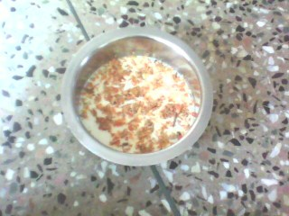

बीस फरवरी को मेरी दो भांजियों के विवाह के लिए नागपुर जाना हुआ। विवाह में मम्मीजी के मामाजी ईश्वर लालजी श्रीमाल भी आए थे और यहीं मुलाकात हुई उनके मामाजी के सुपुत्र यानि मम्मीजी के मामाजी (मेरे नानाजी) और नागपुर निवासी डॉ शान्तिलाल जी कोठारी से।
डॉ शान्तिलालजी Academy of Nutrition Improvement के President हैं। समाज सेवा के साथ- साथ आप HIV/Aids के रोगियों के लिए भी बहुत काम करते हैं। बातों बातों में पता चला कि डॉ कोठारी की एक छोटी सी फेक्ट्री भी है जिसमें वे सोयाबीन का दूध बनाते हैं। नानाजी डॉ कोठारी ने हमें उनकी फेक्ट्री में आने का न्यौता दिया तो मैं , चाचाजी , मौसाजी और एक मित्र, चारों वर्धा रोड़ स्थित उनकी फेक्ट्री पर पहुँच गये। (/span>

नानाजी से बातें करते कई आश्चचर्यजनक बातें चली मसलन सोयाबीन को अगर उचित प्रोसेस के बिना आहार में शामिल किया जाये तो वह बहुत ही हानिकारक हो सकता है। एक सुप्रसिद्ध स्वास्थय पत्रिका में छपा एक लेख बताया जिसमें सोयाबीन को सीधे पीस पर उसका दूध बनाकर दही और पनीर बनाने कर उसका सेवन करने पर स्वास्थय लाभ होता है। डॉ कोठारी ने बताया कि उपरोक्त लेख को पढ़कर स्वास्थय पत्रिका को नोटिस भी दिया है कि या तो वे साबित करें कि इस तरह से सोयाबीन के सेवन से स्वास्थय लाभ होता है या फिर पाठकों को गलत जानकारी देने के लिए अगले अंक में क्षमा मांगे।
अचानक मेरी नजर टेबल पर रखे कुछ पैकेट्स पर पड़ी जिसमें सूखे फूलों की पंखुड़िया रखी थी। मैं उन्हें उठा कर देख रहा था जिस पर लिखा हुआ था पलाश की चाय! पलाश तो हमारे यहाँ बहुतायत होता है उसके सूखे फूल तो बोरियां भर कर मिल सकते हैं, हमारी बात का विषय अब पलाश और लाखोड़ी दाल पर आ गया। डॉ साहब से पता चला कि लाखोड़ी दाल भी बहुत लाभप्रद होती है लेकिन दुष्प्रचार की वजह से अब उसका सेवन बहुत कम हो गया है। महुआ के फूल भी बहुत लाभप्रद होते है लेकिन महुआ से शराब भी बनती है और इस वजह से हमने उसके गुणों को पहचानने की कोशिश ही नहीं की। हरी सब्जियों में तरोटा ( हिन्दी नाम पता नहीं) स्वास्थय के लिए पालक से भी ज्यादा लाभप्रद होता है। 

डॉ साहब ने वहाँ काम कर रही एक महिला को कुछ इशारा किया और कुछ देर में पलाश की बनी चाय आ गई। यह चाय पीले रंग की थी। चाय का पहला घूंट भरते ही जो आनन्द मिला उसका वर्णन यहाँ कर पाना मुश्किल है। इतना स्वादिष्ट और स्फूर्तिदायक पेय पलाश जैसी मामूली चीज से बनता है और हमें पता ही नहीं।
बातें बहुत करनी थी बहुत सी चीजों की जानकारी लेनी बाकी थी लेकिन समयाभाव के कारण हमें वहाँ से जल्दी निकलना पड़ा। पूरे रास्ते हमारी बातों का विषय यही रहा कि कैसी अद्भुद चीजें हमारे आस-पास है लेकिन हम जानते ही नहीं और उनकी अवेहलना करते हैं।
संबधित कड़ियाँ
http://www.indiatogether.org/2006/aug/hlt-iodised.htm
http://www.virusmyth.com/aids/news/indiaconfrep.htm
इस पोस्ट के साथ ही हिन्दी चिट्ठाजगत में दस्तक के पाँच साल पूरे हुए , आप सभी के सहयोग के लिए धन्यवाद।
फोटो indiatogether.org से साभार